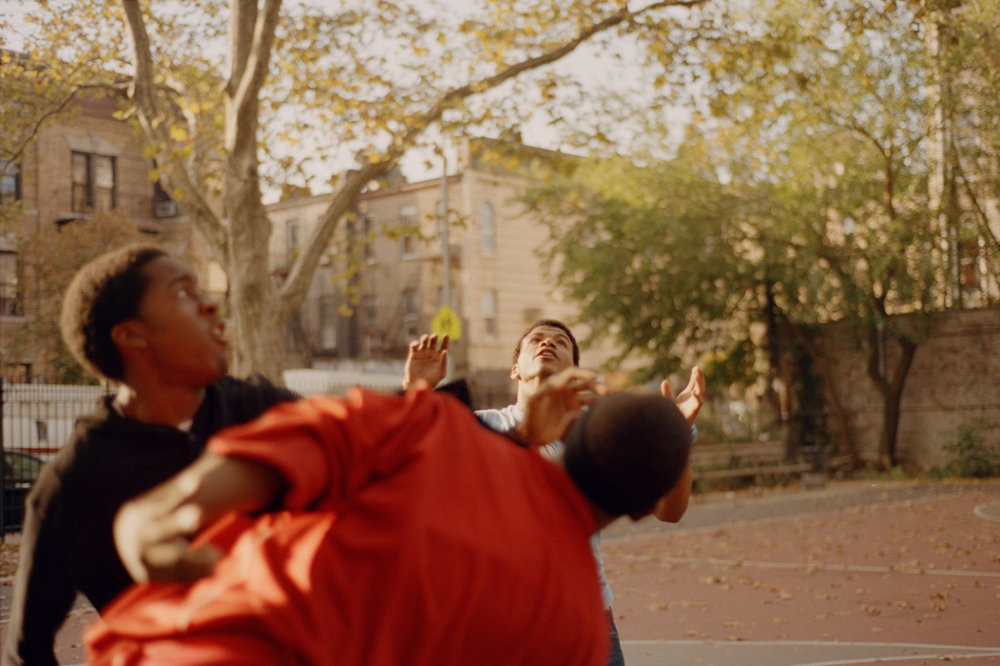
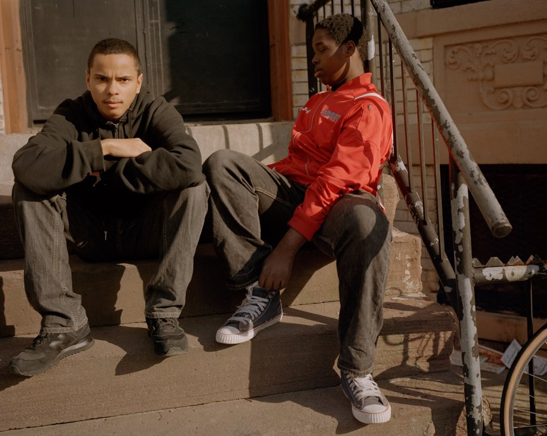
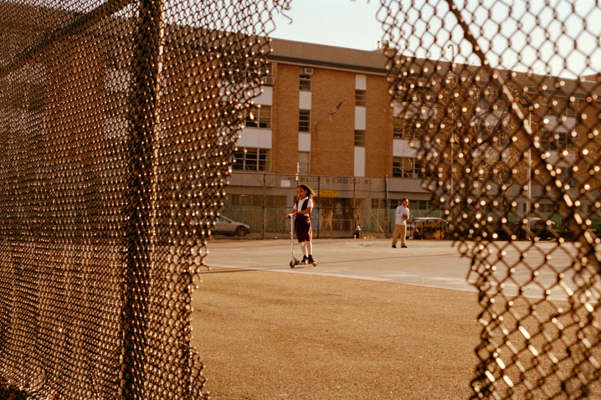
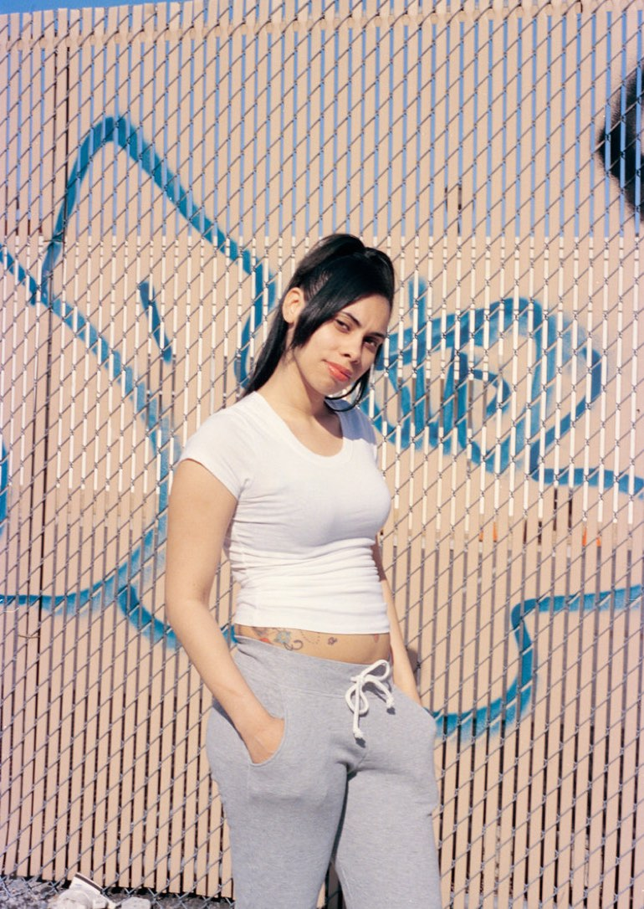
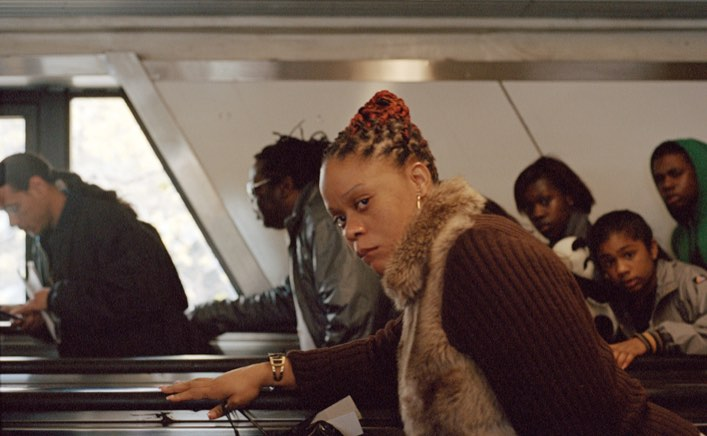
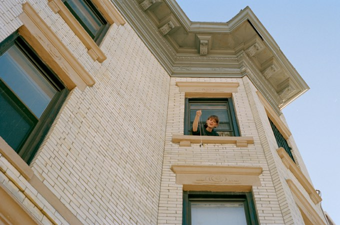
Struggling artists and students may have no other option but to rent in a working-class neighborhood, but their mere presence signifies a shift towards “coolness” and “safety,” i.e. a higher police presence.
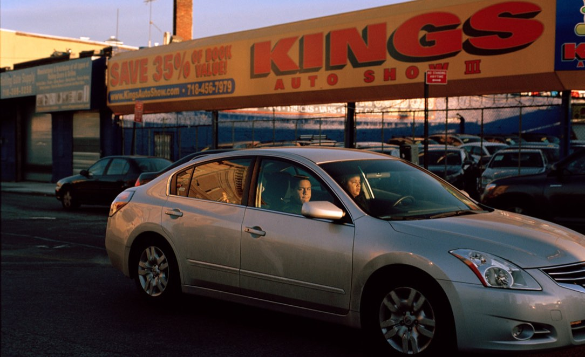
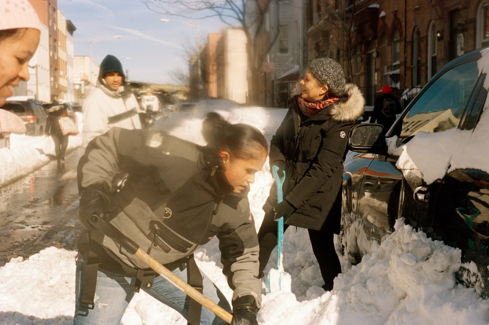
The urban working-class tend to be black or brown, immigrants or descended from immigrants, non-English-speaking, hip-hop, salsa, and bachata loving. Political and municipal systems equate their cultures with criminality, so the average white middle-class individual associates them with danger and never gets to know their neighbors.
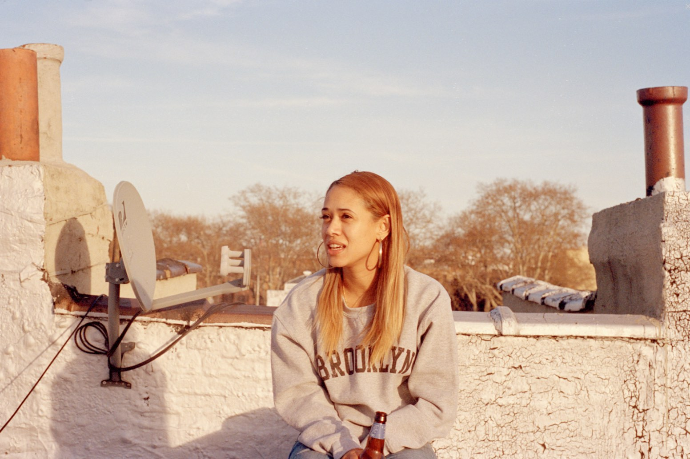
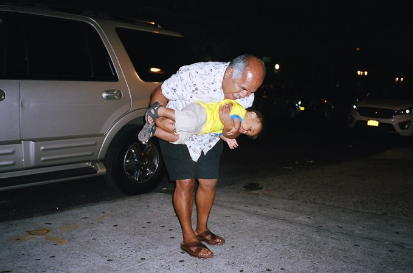
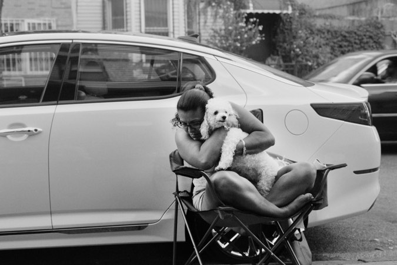
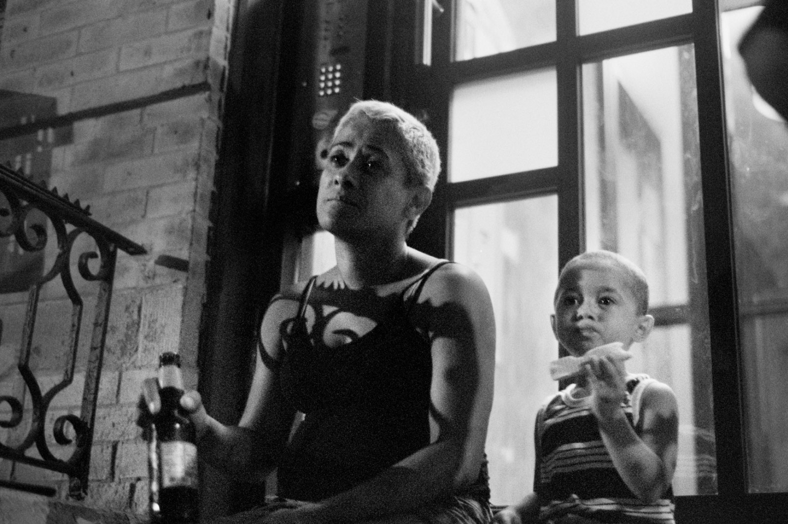
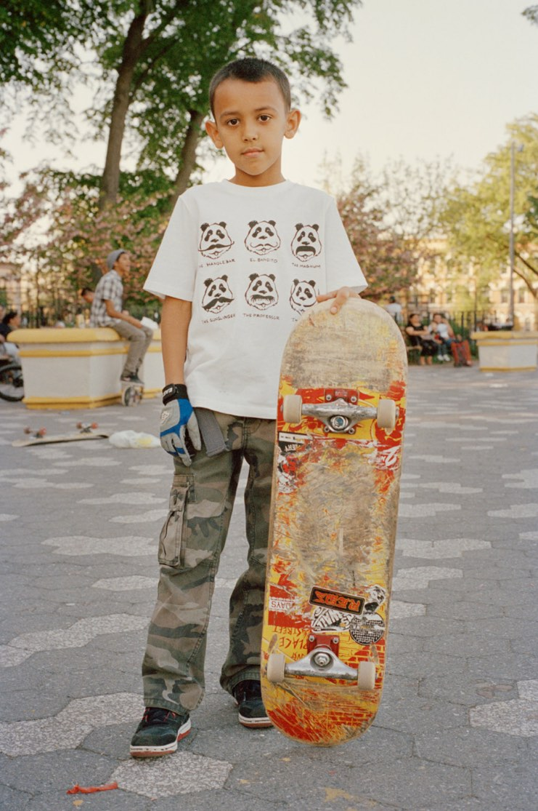
If you walk by a person you see every day and never say hello, you turn the fixtures of a community invisible.
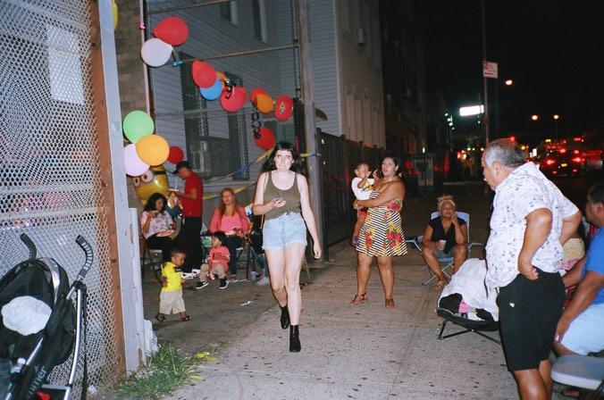
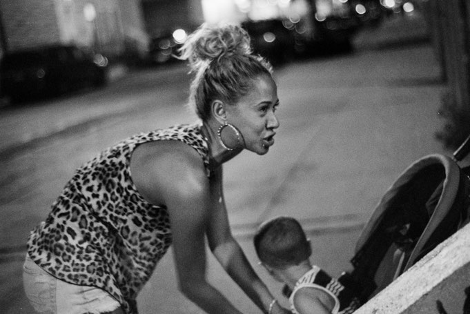
The idea of a neighborhood is based on knowing your neighbors: seeing the same people every day, greeting them, getting to know them as human beings. This was the basis of my photographic work, and what I found in return was the tenderest love from the toughest of communities. It is not one story, but thousands of interwoven threads.
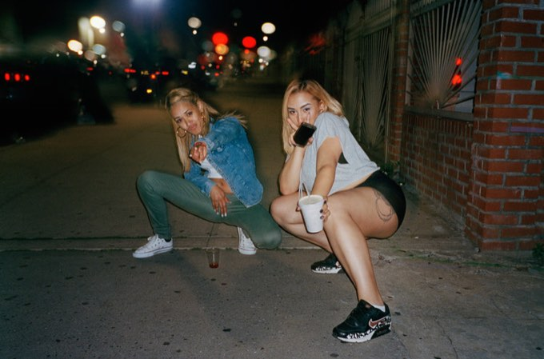